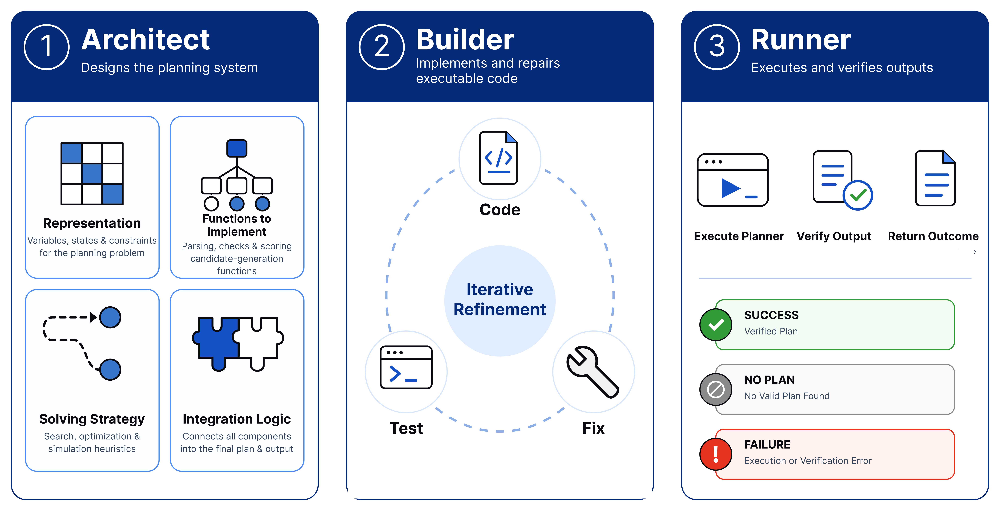
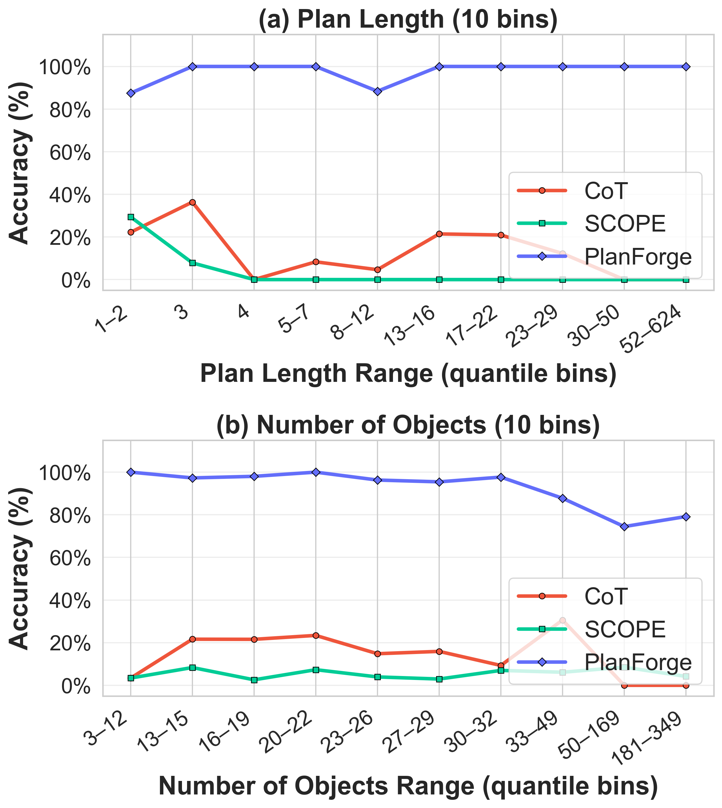

PlanForge Framework Overview. Given a natural language domain description and development instances, the Architect formulates the state schema and solver blueprint, the Builder synthesizes executable Python code with repair feedback, and the Runner executes the compiled program deterministically across unseen instances.
Abstract
Synthesizing reusable domain planners directly from natural language
Large language models (LLMs) are increasingly used to solve multi-step planning problems expressed in natural language. A common approach asks a model to directly produce a sequence of actions or a final plan from a problem description. While such outputs can appear coherent, fluency alone does not ensure that they satisfy constraints, respect transition dynamics, or remain valid as complexity grows.
We introduce PlanForge, an Architect–Builder–Runner (ABR) framework for synthesizing planners from natural-language domains. Given a domain description and a small set of development examples, PlanForge constructs a planner that can be applied to new instances. The Architect designs the planner blueprint: it specifies what to extract from language, defines the function signatures, and selects an appropriate solving strategy. The Builder turns the blueprint into a procedural program, and the deterministic Runner executes the program and verifies its outputs. The result is not just a solution to a single instance, but a reusable planner for a class of problems. We demonstrate that PlanForge achieves 100% success rate on NaturalPlan and StructureSAT and 92.69% VAL-verified accuracy on Plan Gen without test-time API query costs.
The Architect–Builder–Runner (ABR) Paradigm
Decoupling state representation, code synthesis, and deterministic local search
1. The Architect
Analyzes natural-language domain descriptions to discover state-space representations, define input/output function signatures, and select the optimal solving strategy (e.g. state-space search vs constraint satisfaction).
2. The Builder
Translates the blueprint into executable procedural Python programs. Uses development-gate execution feedback to repair state-transition code, condition checks, and formatting errors.
3. The Runner
Executes the compiled solver locally on CPU. Provides deterministic execution without LLM hallucination and achieves $0.00 marginal inference cost on all test instances.
Where Does PlanForge Stand?
Comparing autonomy, representation discovery, and solver reusability across planning paradigms
| Category | Feature / Property | Direct LLM (CoT) | LLM+P | ToS | AutoToS | SCOPE | Gen. Planning | PlanForge (Ours) |
|---|---|---|---|---|---|---|---|---|
| Input & Output | Natural language input | ✓ | ✓ | ✗ | ✗ | ✓ | ✗ | ✓ |
| Execution-verified output | ✗ | ✓ | ✓ | ✓ | ✓ | ✓ | ✓ | |
| Certified no-plan verdict | ✗ | ✓ | ✓ | ✓ | ✗ | ✗ | ✓ | |
| Blueprint Autonomy | No human-curated state schema | ✓ | ✗ | ✗ | ✗ | ✗ | ✗ | ✓ |
| No predefined function signatures | ✓ | ✗ | ✗ | ✗ | ✗ | ✗ | ✓ | |
| No fixed search/solver algorithm | ✓ | ✗ | ✗ | ✗ | ✗ | ✗ | ✓ | |
| Autonomous blueprint synthesis | ✗ | ✗ | ✗ | ✗ | ✗ | ✗ | ✓ | |
| Generalization | Domain-level reusable planner | ✗ | ~ | ✓ | ✓ | ✗ | ✓ | ✓ |
| Classical transition system planning | ✗ | ✓ | ✓ | ✓ | ✗ | ✓ | ✓ | |
| Constraint/scheduling planning | ~ | ✗ | ✗ | ✗ | ✓ | ✗ | ✓ | |
| Scalable to novel / unstructured tasks | ✓ | ✗ | ✗ | ✗ | ✗ | ✗ | ✓ |
Paradigm Matrix. PlanForge is the only framework operating directly on natural language to autonomously discover state schemas and synthesize reusable domain planners without human-authored PDDL blueprints.
Empirical Benchmark Evaluations
Select a benchmark category below to explore domain breakdowns and accuracy scaling
Overall Benchmark Performance & API Cost
Performance is measured using success rate (%) for NaturalPlan and StructureSAT, and accuracy (%) for Plan Gen.
| Metric Type | Method | NaturalPlan Success (%) | Plan Gen Accuracy (%) | StructureSAT Success (%) |
|---|---|---|---|---|
| Performance | CoT | 86.10% | 0.63% | 30.37% |
| SCOPE | 96.00% | 4.80% | 99.70% | |
| PlanForge (Ours) | 100.00% | 92.69% | 100.00% | |
| API Cost ($) | CoT | $1.89 | $4.03 | $39.96 |
| SCOPE | $3.44 | $3.66 | $90.91 | |
| PlanForge (Ours) | $3.21 | $16.77 (Development) | $6.10 |
Plan Gen: Long-Horizon Accuracy Scaling

VAL-Verified Plan Accuracy across Plan Horizons. PlanForge maintains near-perfect accuracy on Medium (11–30 steps), Long (31–100 steps), and Very Long (100+ steps) plan horizons, demonstrating that plan length is not a bottleneck when search is offloaded to a synthesized program.
Domain-Wise Accuracy (%) across 15 Classical Planning Domains
| Domain Name | CoT | SCOPE | PlanForge (Ours) |
|---|---|---|---|
| Alfworld | 0.00% | 0.00% | 68.75% |
| Blocksworld | 0.00% | 3.12% | 100.00% |
| Depot | 0.00% | 3.12% | 100.00% |
| Ferry | 0.00% | 3.12% | 100.00% |
| Floortile | 0.00% | 6.25% | 100.00% |
| Frogs Jumping | 0.00% | 0.00% | 100.00% |
| Goldminer | 0.00% | 3.12% | 93.75% |
| Grid | 0.00% | 15.62% | 96.88% |
| Grippers | 0.00% | 3.12% | 100.00% |
| Hanoi | 0.00% | 3.12% | 34.38% |
| Logistics | 3.12% | 3.12% | 100.00% |
| Rovers | 0.00% | 3.12% | 100.00% |
| Satellite | 6.25% | 3.12% | 96.88% |
| Swap | 0.00% | 3.12% | 100.00% |
| Visitall | 0.00% | 18.75% | 100.00% |
| Plan Gen Overall | 0.63% | 4.80% | 92.69% |
NaturalPlan: Travel & Calendar Reasoning
Comparison of success rate (%) on Trip Planning, Meeting Planning, and Calendar Scheduling.
| Benchmark Sub-Domain | CoT | SCOPE | PlanForge (Ours) |
|---|---|---|---|
| Trip Planning | 84.60% | 100.00% | 100.00% |
| Meeting Planning | 93.20% | 97.33% | 100.00% |
| Calendar Scheduling | 80.51% | 90.67% | 100.00% |
| NaturalPlan Overall | 86.10% | 96.00% | 100.00% |
StructureSAT: Graph & Satisfiability Reasoning
Success rate across 9 structural SAT domain formulations.
| Domain | CoT | SCOPE | PlanForge (Ours) |
|---|---|---|---|
| 3-sat | 2.67% | 100.00% | 100.00% |
| automorphism | 6.67% | 100.00% | 100.00% |
| clique-coloring | 0.00% | 98.00% | 100.00% |
| k-clique | 22.67% | 100.00% | 100.00% |
| k-colorability | 78.67% | 100.00% | 100.00% |
| subgraph-isomorphism | 4.00% | 100.00% | 100.00% |
| k-domset | 93.33% | 99.33% | 100.00% |
| k-vertex-cover | 62.67% | 100.00% | 100.00% |
| pigeonhole | 2.67% | 100.00% | 100.00% |
| StructureSAT Overall | 30.37% | 99.70% | 100.00% |
Zero Marginal Test-Time Cost
Flat $O(1)$ developer cost vs. linear $O(N)$ per-query LLM token costs

Cost Amortization Curve. Cumulative API cost (USD) versus the number of evaluated test instances. PlanForge incurs a one-time development cost during the ABR phase and zero test-time API queries, so its total cost remains constant ($O(1)$). In contrast, CoT and SCOPE query the model for each instance, causing their costs to increase linearly ($O(N)$).
In-Depth Analytical Insights
Select an analysis topic below to examine specific paradigm behaviors
Solution-Existence Prediction vs. Witness Plan Synthesis
Comparing plan-existence prediction accuracy against actual plan-generation accuracy.
| Benchmark | Evaluation Metric | CoT | SCOPE | PlanForge (Ours) |
|---|---|---|---|---|
| Plan Gen | Plan-existence accuracy | 98.89% | 11.31% | 98.89% |
| Plan-generation accuracy | 13.78% | 5.37% | 92.69% | |
| StructureSAT | SAT/UNSAT prediction accuracy | 75.26% | 99.70% | 100.00% |
| Success rate | 30.37% | 99.70% | 100.00% |
Predicting solution existence overestimates actual plan generation capabilities for baselines, whereas PlanForge produces verified executable witnesses.
Human-Guided vs. Fully Autonomous PlanForge
Accuracy (%) on Plan Gen Easy under the short-plan setting (0–2 actions).
| Synthesis Setting | Guided PlanForge Accuracy (%) | Autonomous PlanForge Accuracy (%) |
|---|---|---|
| Plan Gen Easy (Short Plans) | 91.10% | 100.00% |
Autonomous PlanForge discovers state-space representations without human blueprints, outperforming human-guided specifications across all 15 domains.
Citation
If you find PlanForge useful for your research, please consider citing our paper:
@article{baskar2026planforge,
title = {PlanForge: Synthesizing Planners from Natural Language with an LLM-Driven Architect--Builder--Runner Pipeline},
author = {Baskar, Sarvesh and Bommireddy, Raviteja and Sharma, Saksham Kumar and Kokel, Harsha and Gaur, Manas and Katz, Michael and Sohrabi, Shirin and Srinivas, Kavitha},
journal = {arXiv preprint},
year = {2026}
}